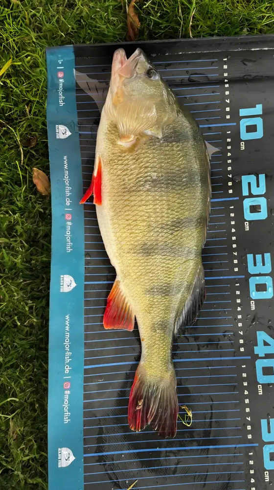
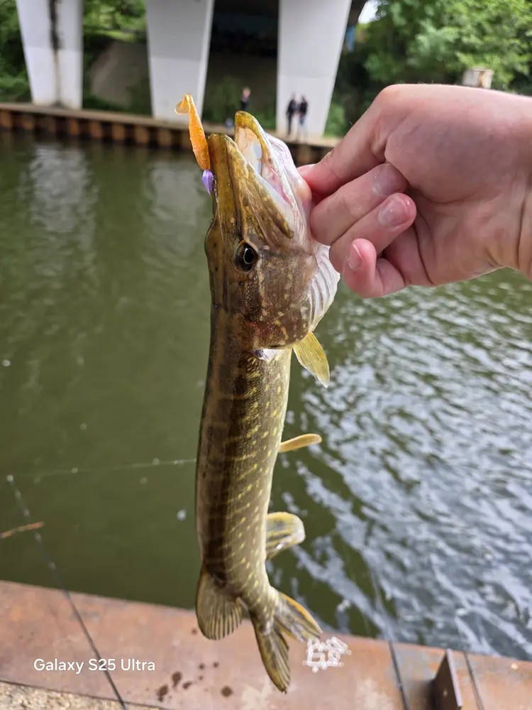
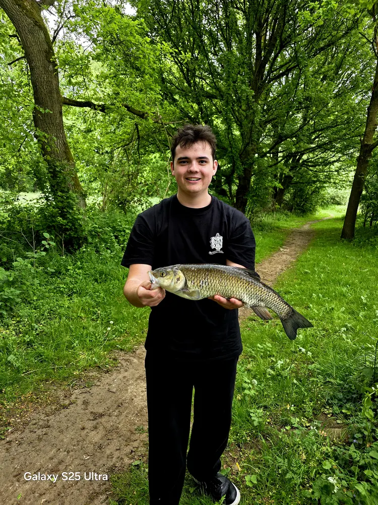
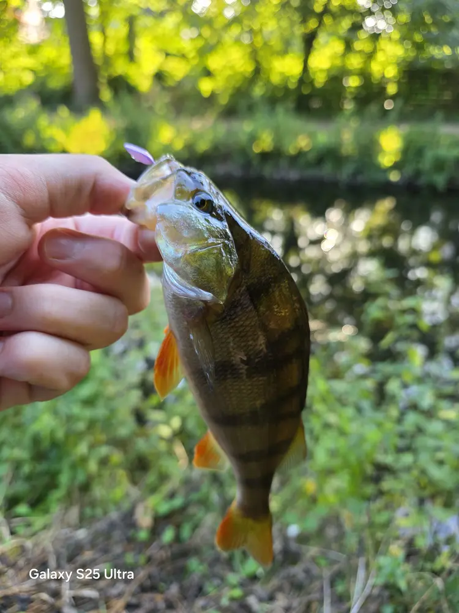

Modern Predator Fishing
모던 프레데터 피싱
Mit Nays Tackle verbinde ich modernes Angeln mit einem echten Lifestyle. Angeln ist längst nicht mehr nur still sitzen und warten es ist Bewegung, Technik und eigener Style.
Nays steht genau für diesen Wandel. Die Köder sind nicht einfach nur Tools, sie sind Teil eines modernen Streetfishing-Styles, der sich ständig bewegt und weiterentwickelt. Du bist unterwegs, liest das Wasser, passt dich an und fischst aktiv statt passiv zu warten.
Auch die Streetwear-Komponente gehört für mich dazu. Angeln ist heute nicht nur ein Hobby, sondern ein komplett neuer Vibe Ausrüstung, Kleidung und Mindset gehören zusammen. Genau das macht den Unterschied zwischen klassischem Angeln und moderner Fishing-Kultur.
Deshalb passt Nays perfekt dazu: Es steht für modernes Angeln einfach rausgehen, fischen und den eigenen Style leben.




Ein großer Teil meines Setups basiert auf Nays Tackle. Nicht wegen Hype, sondern weil es am Wasser funktioniert.
Moderne Köder, durchdachte Designs und ein klarer Fokus auf aktives Angeln genau das passt zu meinem Style beim Angeln.
Der Nays VNM ist ein hochfrequent laufender Paddle-Tail und zeichnet sich außerdem durch seine leicht rollende Aktion aus. Bereits am leichten Jigkopf entfaltet er seine volle Aktion.
See MoreDer Nays MD MX 2.0 ist ein weiterentwickelter Twitchbait mit dezentem Lauf beim Einholen und aggressiven Ausbrüchen beim Twitchen, die Räuber zuverlässig zum Biss reizen. Dank magnetischem Weight-Transfer-System, bleifreier Bauweise und scharfen BKK-Drillingen bietet er weite Würfe, hohe Präzision und starke Fängigkeit.
See MoreDer Nays MTL LF ist ein kompakt gebauter, bleifreier Power-Fishing-Köder, der durch hohe Wurfweiten und eine schnelle Absinkgeschwindigkeit große Wasserflächen effizient absuchen kann. Dank drei verstellbarer Ösen für unterschiedliche Laufeigenschaften und zwei hochwertigen BKK-Drillingen bietet er maximale Flexibilität und eine hohe Bissausbeute.
See MoreKöder sind nur die halbe Miete. Was den Unterschied macht, ist die perfekte Anpassung am Spot. Jedes Gewässer und jeder Angeltag erfordern absolute Präzision und taktisches Feingefühl.
Egal ob ultraleichte Finesse-Montagen oder aggressives Power-Fishing die Köderführung entscheidet über Erfolg oder Schneider. Es geht darum, das Zusammenspiel aus Absinkphase, Bodenkontakt und Köderaktion komplett zu verinnerlichen und die Raubfische strategisch auszutricksen.
Das hier ist nur ein kleiner Einblick. Wenn du mehr sehen willst echte Fänge, Sessions und Updates dann schau auf Instagram vorbei.